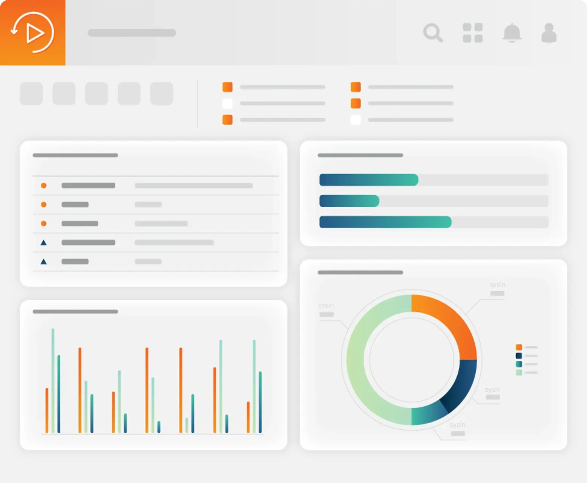

请访问原文链接：Backup Exec 25.1 Windows x64 - 数据备份和恢复 查看最新版。原创作品，转载请保留出处。
作者主页：sysin.org
Arctera Backup Exec
(之前称为 Veritas Backup Exec)
通过跨物理、虚拟和云的集成网络弹性实现高级数据保护。

概述
Arctera Backup Exec™ 是一款为您所有数据而设计的统一备份解决方案。Backup Exec 为虚拟、物理和多云环境中的所有数据提供经济高效的一体化备份与恢复功能。您可以灵活选择云连接器、灾难发生时即时恢复至 Azure、防御勒索软件攻击、提升虚拟化备份性能以及协助符合 GDPR（通用数据保护条例）合规要求 (sysin)。无论您选择哪种配置，Arctera Backup Exec 都能为您提供全面的外部威胁防护，即使发生意外，您的关键数据也能在各处得到完整备份，并可快速、轻松地恢复。
无需使用多个单点产品。
作为企业主/经营者，您必须承担很多工作。数据备份和恢复不应该是其中之一。借助 Arctera Backup Exec，您可以获得简单而强大的解决方案 (sysin)，确保关键业务数据永远不会丢失、被盗或损坏。随着数据管理需求的增长，Backup Exec 可以无缝扩展以满足这些需求，让您充满信心并长期节省成本。
Arctera Backup Exec 深受全球 45,000 多家企业的信赖。
简单
通过易于使用的界面快速跟踪和监控所有备份和恢复活动。
安全
通过加密、身份验证和访问控制来保护备份数据，以确保信息的机密性、完整性和安全恢复。
统一
通过单个用户控制台无缝保护物理、虚拟和云工作负载。
保护您的 Microsoft 365 数据。
对 Exchange、OneDrive、SharePoint 和 Teams 数据的内置保护。
与管理多个单点产品相比，成本和复杂性更低。
对 Microsoft 365 备份数据的存储位置拥有完全主权。

优化安全性和合规性。
保护您的备份数据免受勒索软件攻击。
确保每个位置的数据都是合规的。
安全地存储敏感数据，例如信用卡交易。

保护云中的关键数据
- 适用于 AWS 和 Azure 的可部署市场模板。
- 适用于所有主要云供应商的认证 Cloud Connector。
- 支持所有 AWS 云存储层。
- 通过线内重复数据删除优化存储成本和带宽。

增强对虚拟工作负载的保护
- 使用 Backup Exec Accelerator 进行永久增量虚拟机备份。
- 扩展的超融合环境支持。
- 自动发现和保护新 VM。
- 即时恢复 VM。

市场领导地位
Backup Exec 在用户评分和社交数据方面被评为最佳企业软件解决方案之一。

新增功能
Arctera Backup Exec 25 - 2025-02-03
了解最新版本中的新功能
集中式访问管理、改进的恶意软件检测、增强的安全性和控制。
对 Windows Server 2025 的新支持、新的 NetApp 环境和 Teams 专用频道可确保跨更多平台提供保护。
Self Protect 增强功能和还原到 PST for Exchange Online 提供了更高的恢复灵活性。
Backup Exec 不断发展，即将推出的功能包括对超融合和开源虚拟化平台的扩展支持以及 Entra ID 备份。
Backup Exec 25.1 新增功能 - 2025-10-06
- 支持 Microsoft Entra ID
Backup Exec 通过备份和还原以下实体来保护 Microsoft Entra ID 租户数据：- 用户（Users）
- 组（Groups）
- 应用程序注册（Application registrations）
- 企业应用程序（Enterprise applications）
- 这些实体之间的关系（Relationships between these entities）
升级后，请通过选择 Update > Update Configuration 更新现有的 Microsoft 365 租户配置，以启用此功能。
- 支持 Microsoft SharePoint Server Subscription Edition
Backup Exec 现在支持对 SharePoint Server Subscription Edition 的保护，并可从其备份中执行单项粒度还原（GRT）。 - Microsoft 365 工作负载的备份和还原任务委派
现在可以在 CASO-MBES 环境中配置 Microsoft 365 的备份和还原任务 (sysin)。
Microsoft 365 工作负载的备份和还原任务可在 中央管理服务器（CAS） 上创建，并委派到 托管 Backup Exec 服务器（MBES） 执行，从而实现更好的负载分配和更高效的任务执行。 - Microsoft 365 增强功能
Backup Exec 改进了 Microsoft 365 的备份操作：- 优化 合并全备（Consolidate Full），缩短大规模数据的备份窗口。
- 提升 Microsoft 365 永久增量备份（Forever Incremental） 与 合并全备 的速度，适用于 SharePoint Online 和 OneDrive for Business。
升级后，请通过选择 Update > Update Configuration 更新现有的 Microsoft 365 租户配置，以充分利用这些改进。
- OVHcloud S3 对象锁支持
用户现在可以在配置为 Backup Exec 的 OVHcloud 云存储上创建启用 一次写入、多次读取（WORM） 的备份集。 - 支持新的云存储区域
Backup Exec 现已支持以下云存储区域，为用户提供更大的灵活性和成本优化：- Amazon：墨西哥（Central）
- Amazon：亚太地区（泰国）
- Amazon：亚太地区（马来西亚）
- Google：斯德哥尔摩（europe-north2）
- Google：墨西哥（northamerica-south1）
下载地址
Arctera Backup Exec 25.0 for Windows x64 Multilingual
Backup Exec 25.0 Install and upgrade from 22.x 23.x and 24.x
- File name: Backup_Exec_25.0_1193.0000_ML.iso
- Size: 1.49 GB
- Release date: 2025-02-03
- Supported languages: Chinese (Simplified), English, French, German, Japanese, Spanish
百度网盘链接：https://pan.baidu.com/s/15OEwOHLkBrQwb4c1XNujUg?pwd=jfa6
include Evaluation License valid for 60 days
Arctera Backup Exec 25.1 for Windows x64 Multilingual
Backup Exec install and upgrade from prior versions
- File name: Backup_Exec_25.1_1193.1335_ML.iso
- Size: 1.49 GB
- Release date: 2025-10-06
- Supported languages: Chinese (Simplified), English, French, German, Japanese, Spanish
Backup Exec Migration Assistant (BEMA) to migrate Backup Exec from prior versions to the latest
- File name: MigAssist-25.0.1193R.exe
百度网盘链接：https://pan.baidu.com/s/15OEwOHLkBrQwb4c1XNujUg?pwd=jfa6
include Evaluation License valid for 60 days
相关产品：NetBackup 11 for Linux & Windows - 领先的企业备份和恢复解决方案

文章用于推荐和分享优秀的软件产品及其相关技术，所有软件默认提供官方原版（免费版或试用版），免费分享。对于部分产品笔者加入了自己的理解和分析，方便学习和研究使用。任何内容若侵犯了您的版权，请联系作者删除。如果您喜欢这篇文章或者觉得它对您有所帮助，或者发现有不当之处，欢迎您发表评论，也欢迎您分享这个网站，或者赞赏一下作者，谢谢！
 支付宝赞赏
支付宝赞赏  微信赞赏
微信赞赏赞赏一下
敬请注册！点击 “登录” - “用户注册”（已知不支持 21.cn/189.cn 邮箱）。 请勿使用联合登录（已关闭）。